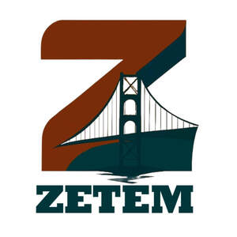

Trade Mark Journal No.2026/007 13 February 2026
UK00004326335 19 January 2026 (1,9,10,17,21,29,30,35)

- Class 1
- Chemicals used in industry, science, photography, agriculture, horticulture and forestry; biological preparations used in industry and science; pectin, lecithin, enzymes and preservatives used in food industry; vitamins, preservatives and antioxidants used in cosmetic production; fertilizers; soils; unprocessed artificial resins; unprocessed plastics; fire extinguishing compositions; adhesives (except for stationery, medical or household purposes).
- Class 9
- Scientific, nautical, surveying, meteorological, industrial and laboratory measuring instruments and devices; non-medical thermometers; barometers; ammeters; voltmeters; hygrometers; test instruments; telescopes; periscopes; binoculars; magnifying; compasses; indicators for vehicles; laboratory materials; microscopes; experimental apparatus and instruments; devices for recording, transmission or reproduction of sound and images; cameras; photographic apparatus; televisions; video recorders and players; CD and DVD players; MP3 players and remote controls; computers; desktop computers; tablet computers; wearable technological devices (smart watches, wristbands, head-worn devices); microphones; loudspeakers; headphones; communication and reproduction devices; mobile phones and cases; mobile phone screen protectors; fixed phones; telephone exchanges; computer printers; scanners; photocopiers; magnetic and optical recording media; computer programs and software recorded thereon; electronic publications downloadable via networks; mobile applications; cryptocurrency software; non-fungible tokens; magnetic and optical cards and readers; cinema films, series, and video music clips recorded on magnetic, optical and electronic media; antennas; satellite antennas; boosters and parts thereof; ticket dispensers; ATMs; elements used in electronics of machines and devices; semiconductors; electronic circuits; integrated circuits; chips; diodes; transistors; magnetic heads; deflectors; electronic locks; photo sensors; electronic on/off mechanisms; sensors; meters for measuring consumption; timers; protective clothing; protective and rescue equipment; electricity transmission, conversion, storage and control devices; plugs; junction boxes; switches; fuses; ballasts; starters; electrical panels; resistors; sockets; transformers; adapters; chargers; cables; batteries; accumulators; solar panels for electricity production; electric vehicle charging stations; devices whose main function is alarm; electric bells; traffic signaling and indicator devices; fire extinguishing apparatus including vehicle-mounted; radars; submarine radars (sonars); night vision devices; decorative magnets; metronomes; humanoid robots; laboratory robots; educational robots; security monitoring robots.
- Class 10
- Surgical, medical, dental and veterinary apparatus, instruments and furniture; artificial organs and prostheses; orthopaedic medical materials: medical corsets, orthopaedic shoes, elastic and support bandages; surgical clothing and sterile covers; health masks; sexual apparatus and instruments; condoms; baby bottles; baby bottle nipples; glasses; sunglasses; lenses and their cases, covers, parts and accessories; pacifiers; teething toys; medical bracelets and rings; bracelets and rings preventing rheumatism.
- Class 17
- Rubber, gutta-percha, rubber, asbestos, mica and semi-processed synthetic materials in powder, sheet, rod and foil form; insulation, filling and sealing materials; paints for insulation; fabrics for insulation; tapes for insulation; insulation covers; joint fillers; gaskets; o-rings (excluding engine, cylinder and tap gaskets); flexible pipes and hoses made of rubber, plastic or synthetic materials (including for vehicles); pipe sheaths and fittings of non-metallic materials; textile hoses; hose fittings and connectors; radiator hoses for vehicles (excluding fire hoses); synthetic material profiles for vehicles (for decoration).
- Class 21
- Non-electric cleaning devices and tools; brushes (except paint brushes); steel wool; sponges; mops; cloths for cleaning and wiping made of textiles; dishwashing gloves; non-electric polishing machines; carpet sweepers; floor mops; toothbrushes; electric toothbrushes; dental floss; shaving brushes; hair brushes; makeup brushes; combs; household and kitchen utensils (non-electric, including those made of precious metals, excluding cutlery); dinnerware; pots; pans; bottle openers; cooking utensils; manual grills; bottle pumps (battery or rechargeable included); ironing boards and covers; clothes drying racks; cages for pets; aquariums; vivariums; terrariums; glass, porcelain, ceramic or clay decorative objects; statues; figurines; vases; trophies made of these materials; mouse traps; pest traps; fly and insect repelling or killing electric devices; fly catchers; fly swatters; electric and non-electric facial cleaning devices; powder puffs; toilet boxes; spray hose heads; irrigation filter heads; garden irrigation devices; tap attachments; unprocessed glass; semi-processed glass; decorative glass mosaics; glass powders (excluding construction); glass wool (not for insulation or textiles).
- Class 29
- Meat, fish, poultry and game; all processed meat products; pulses; ready-made soups; bouillons; olives; olive pastes; animal milk; plant-based milk; dairy products (including butter); edible vegetable oils; dried, preserved, frozen, cooked, smoked and pickled fruits and vegetables; sauces made from fruits and vegetables; nuts; peanut and hazelnut pastes; tahini; eggs; powdered eggs; potato chips.
- Class 30
- Coffee; cocoa; coffee or cocoa-based beverages; chocolate-based beverages; pasta; dumplings; noodles; bakery products; pastries; sweet desserts; bread; bagels; buns; pies; sandwiches; hamburger sandwiches; wraps; layered pastries; börek; cakes; baklava; kadayif; künefe; pudding; milk pudding; sütlaç; keşkül; honey; royal jelly; propolis; spices; flavorings for food; vanilla; tomato sauces; yeast; baking powder; flour; semolina; starch; powdered sugar; sugar cubes; icing sugar; teas; iced teas; confectionery; chocolates; biscuits; crackers; wafers; chewing gum; ice cream; edible ice; salt; cereal-based snacks; popcorn; oatmeal; corn chips; breakfast cereals; processed wheat, barley, oats, rye, rice; pekmez.
- Class 35
- Advertising, marketing and public relations services; organization of trade fairs and exhibitions for commercial purposes; provision of online marketplaces for buyers and sellers; office services: secretarial services, arranging newspaper subscriptions, compilation of statistics, leasing of office machines, systematization of information from computer databases, telephone answering services; business management, administration, and consultancy; accounting and financial advisory services; recruitment, hiring, personnel selection, and temporary staffing services (including invoice, tax, and traffic management on behalf of others); organizing and conducting auctions; The bringing together, for the benefit of others, of a variety of chemicals used in industry, science, photography, agriculture, horticulture and forestry; biological preparations used in industry and science; pectin, lecithin, enzymes, and preservatives used in the food industry; vitamins, preservatives, and antioxidants used in cosmetic production; fertilizers and soils; unprocessed artificial resins and plastics; fire extinguishing compositions; adhesives (except for stationery, medical or household purposes); measuring instruments and devices used in science, navigation, surveying, meteorology, industry, and laboratories; non-medical thermometers, barometers, ammeters, voltmeters, hygrometers, test instruments, telescopes, periscopes, binoculars, magnifying glasses, compasses; vehicle indicators; laboratory materials; microscopes; experimental apparatus and instruments; devices for recording, transmission, or reproduction of sound and images; cameras, photographic apparatus, televisions, video recorders and players, CD/DVD players, MP3 players and remote controls; computers, desktop and tablet computers, wearable technological devices (smart watches, wristbands, head-worn devices); microphones, loudspeakers, headphones; communication and reproduction devices and computer peripherals; mobile phones and cases, mobile phone screen protectors; fixed phones, telephone exchanges, computer printers, scanners, photocopiers; magnetic and optical recording media and software recorded thereon; electronic publications downloadable via networks; mobile applications; cryptocurrency software; non-fungible tokens; magnetic/optical cards and readers; cinema films, series, and video music clips recorded on magnetic, optical, and electronic media; antennas, satellite antennas, boosters and parts thereof; ticket dispensers, ATMs; electronic elements for machines and devices; semiconductors, electronic circuits, integrated circuits, chips, diodes, transistors, magnetic heads, deflectors; electronic locks, photo sensors, electronic on/off mechanisms and remote controls, sensors; consumption meters and timers; protective clothing and rescue equipment; glasses, sunglasses, lenses and their cases, covers, parts and accessories; electricity transmission, conversion, storage, and control devices, plugs, junction boxes, switches, fuses, ballasts, starters, electrical panels, resistors, sockets, transformers, adapters, chargers; cables, batteries, accumulators; solar panels for electricity production; electric vehicle charging stations; alarm devices (excluding vehicle alarms); electric bells; traffic signaling and indicating devices; fire extinguishing apparatus including vehicle-mounted, fire hoses and valves; radars, submarine radars (sonars), night vision devices; decorative magnets; metronomes; humanoid robots, laboratory robots, educational robots, security monitoring robots; surgical, medical, dental and veterinary apparatus, instruments and furniture; artificial organs and prostheses; orthopaedic medical materials: medical corsets, orthopaedic shoes, elastic and support bandages; surgical clothing and sterile covers; health masks; sexual apparatus and instruments; condoms; baby bottles, nipples, pacifiers, teething toys; medical bracelets and rings, bracelets and rings preventing rheumatism; rubber, gutta-percha, asbestos, mica and semi-processed synthetic materials in powder, sheet, rod and foil form; insulation, filling and sealing materials, insulation paints, insulation fabrics, insulation tapes, insulation covers, joint fillers, gaskets, o-rings (excluding engine, cylinder, and tap gaskets); flexible pipes and hoses made of rubber, plastic or synthetic materials (including for vehicles); pipe sheaths and fittings of non-metallic materials; textile hoses; hose fittings and connectors; radiator hoses for vehicles (excluding fire hoses); synthetic material profiles for vehicles (for decoration); non-electric cleaning devices and tools; brushes (except paint brushes); steel wool; sponges; mops; cloths for cleaning and wiping made of textiles; dishwashing gloves; non-electric polishing machines; carpet sweepers; floor mops; toothbrushes, electric toothbrushes, dental floss, shaving brushes, hair brushes, makeup brushes; combs; household and kitchen utensils (non-electric, including precious metals, excluding cutlery); dinnerware, pots, pans, bottle openers; non-electric cooking utensils and grills; bottle pumps (battery or rechargeable included); ironing boards and covers; clothes drying racks; cages for pets; aquariums, vivariums, terrariums; decorative objects made of glass, porcelain, ceramic, clay, statues, figurines, vases, trophies; mouse traps, pest traps, fly and insect repelling or killing electric devices; fly catchers, fly swatters; perfumed candles, perfume sprays and vaporizers; electric and non-electric facial cleaning devices; powder puffs; toilet boxes; spray hose heads, irrigation filter heads, garden irrigation devices; tap attachments; unprocessed glass, semi-processed glass, decorative glass mosaics, glass powders (excluding construction), glass wool (not for insulation or textiles); meat, fish, poultry and game, processed meat products; pulses; ready-made soups, bouillons; olives, olive pastes; animal and plant-based milk, dairy products including butter; edible vegetable oils; dried, preserved, frozen, cooked, smoked and pickled fruits and vegetables; sauces made from fruits and vegetables; nuts, peanut and hazelnut pastes, tahini; eggs, powdered eggs; potato chips; coffee, cocoa; coffee or cocoa-based beverages; chocolate-based beverages; pasta, dumplings, noodles; bakery products, pastries, sweet desserts; bread, bagels, buns, pies, sandwiches, hamburger sandwiches, wraps, layered pastries, börek, cakes, baklava, kadayif, künefe, pudding, milk pudding, sütlaç, keşkül; honey, royal jelly, propolis; flavorings for food, spices, vanilla, tomato sauces; yeast, baking powder, flour, semolina, starch; powdered sugar, sugar cubes, icing sugar; teas, iced teas; confectionery, chocolates, biscuits, crackers, wafers, chewing gum; ice cream, edible ice; salt; cereal-based snacks; popcorn; oatmeal; corn chips; breakfast cereals; processed wheat, barley, oats, rye, rice; pekmez, enabling customers to conveniently view and purchase those goods via retail, wholesale, online and catalogues.
ZETEM LTD
ZETEM İHRACAT SANAYİ VE TİCARET LİMİTED ŞİRKETİ